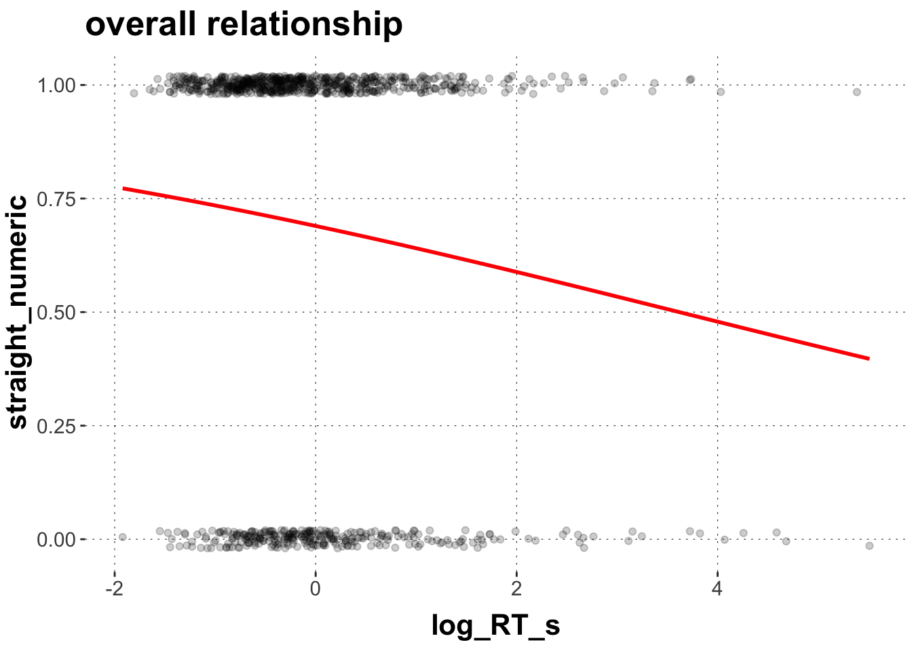
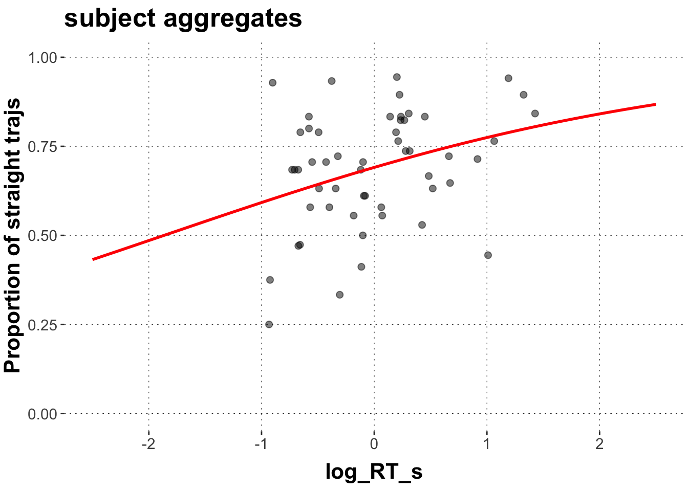
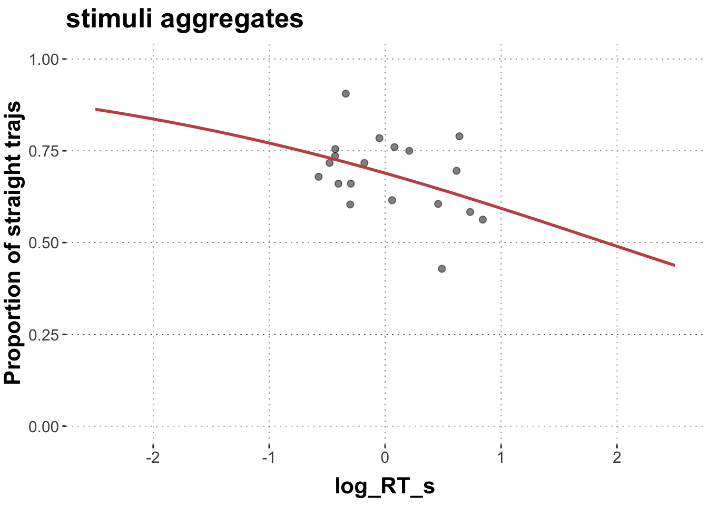
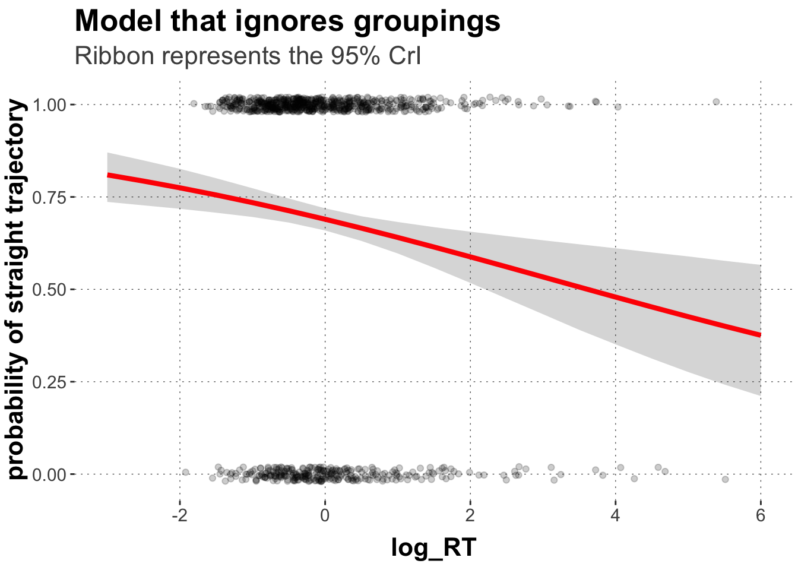
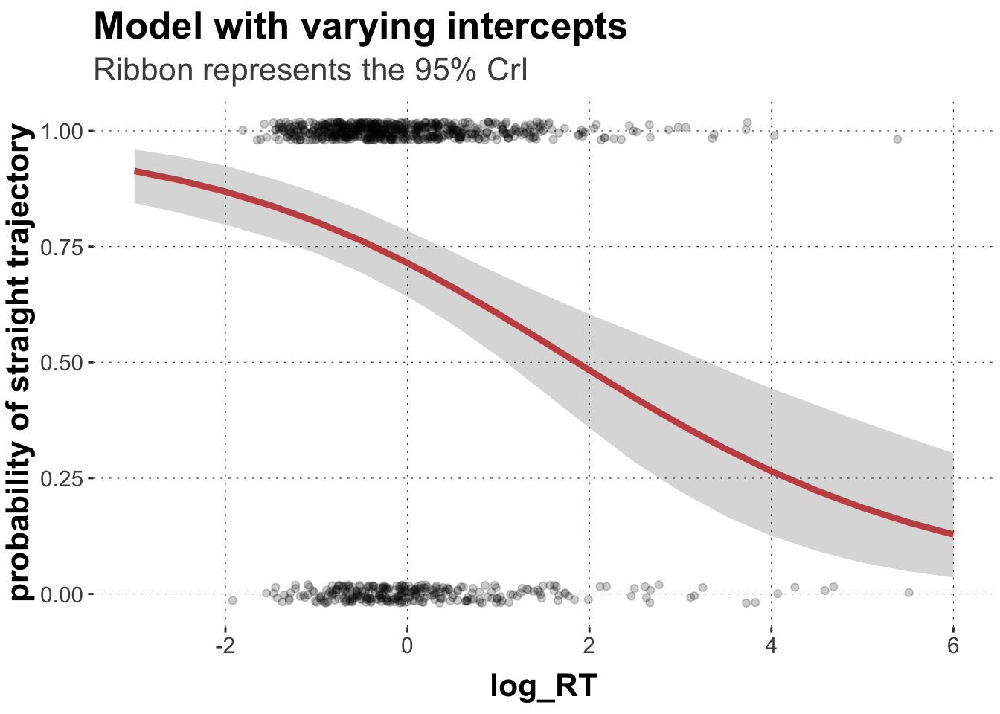
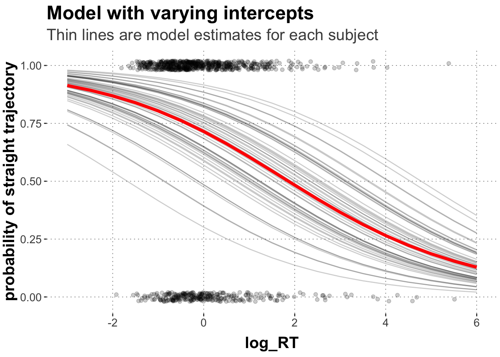
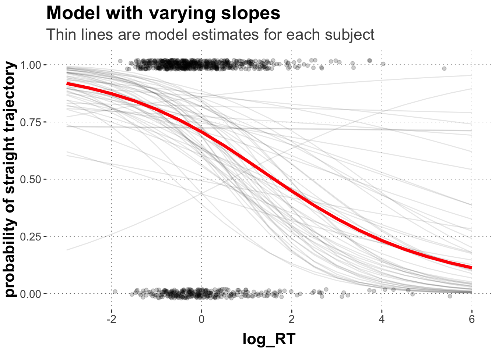
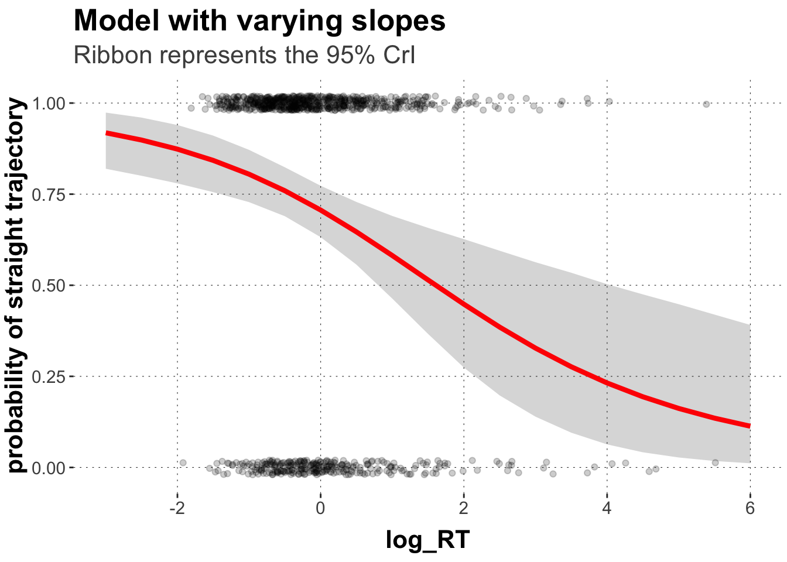

Here is code to load (and if necessary, install) required packages, and to set some global options (for plotting and efficient fitting of Bayesian models).
Toggle code
# install packages from CRAN (unless installed)pckgs_needed <-c("tidyverse","brms","rstan","rstanarm","remotes","tidybayes","bridgesampling","shinystan","mgcv")pckgs_installed <-installed.packages()[,"Package"]pckgs_2_install <- pckgs_needed[!(pckgs_needed %in% pckgs_installed)]if(length(pckgs_2_install)) {install.packages(pckgs_2_install)} # install additional packages from GitHub (unless installed)if (!"aida"%in% pckgs_installed) { remotes::install_github("michael-franke/aida-package")}if (!"faintr"%in% pckgs_installed) { remotes::install_github("michael-franke/faintr")}if (!"cspplot"%in% pckgs_installed) { remotes::install_github("CogSciPrag/cspplot")}# load the required packagesx <-lapply(pckgs_needed, library, character.only =TRUE)library(aida)library(faintr)library(cspplot)# these options help Stan run fasteroptions(mc.cores = parallel::detectCores())# use the CSP-theme for plottingtheme_set(theme_csp())# global color scheme from CSPproject_colors = cspplot::list_colors() |>pull(hex)# names(project_colors) <- cspplot::list_colors() |> pull(name)# setting theme colors globallyscale_colour_discrete <-function(...) {scale_colour_manual(..., values = project_colors)}scale_fill_discrete <-function(...) {scale_fill_manual(..., values = project_colors)}
This tutorial takes you through one practical example, showing the use of multilevel models. The main learning goals are:
learning how to implement multilevel linear models with brms including
understanding random intercept models
understanding random slope models
The independence assumption
One way to motivate multi-level modeling is by noting that, without group-level terms, the model would be making strong (possibly) implausible independence assumptions.
As a motivating example, let us look at the probability of observing a straight trajectory predicted by response latency in the mouse tracking data set. Here a the plot for all data in the click group plus a logistic smooth term:
Toggle code
# set up data framedolphin_agg <- dolphin %>%filter(correct ==1, group =="click") %>%mutate(straight =as.factor(ifelse(prototype_label =="straight", 1, 0)),log_RT_s =my_scale(log(RT)),AUC_s =my_scale(AUC))dolphin_agg$straight_numeric <-as.numeric(as.character(dolphin_agg$straight))# plot predicted values against dataggplot(data = dolphin_agg,aes(x = log_RT_s, y = straight_numeric)) +geom_point(position =position_jitter(height =0.02), alpha =0.2) +geom_smooth(method ="glm", color = project_colors[2],method.args =list(family ="binomial"), se =FALSE, fullrange =TRUE) +ggtitle("overall relationship") +theme(legend.position ="right")

This picture suggest a negative relationship between the probability of observing straight trajectories (y) and people’s response times (x) (i.e. line goes down).
But this analysis looked at all responses at once and disregarded that responses came from groups of sources. For example, responses that come from one and the same participant are dependent on each other because participants (subject_id) might differ in characteristics relevant to the task, like how fast they move and how many times they move to the target in a straight trajectory. Another group of data points is related to different stimuli (exemplars). Different stimuli might have some inherent properties that lead to different response times and different proportions of straight trajectories. So analyzing the data without telling the model about these groups violates an important assumption of linear models. The independence assumption.
Let’s look at these groups individually, starting by aggregating over over subject_ids and exemplars and plot the results.
Toggle code
# aggregate over subjectsdolphin_agg2 <- dolphin_agg %>%group_by(subject_id) %>%summarize(log_RT_s =mean(log_RT_s),straights =sum(straight_numeric),total =n()) # plot predicted values for subjectsggplot(data = dolphin_agg2,aes(x = log_RT_s, y = straights/total)) +geom_point(size =2, alpha =0.5) +# we use the geom_smooth function here as a rough proxy of the relationship geom_smooth(method ="glm", formula = y ~ x, color = project_colors[2],method.args =list(family ="binomial"), se =FALSE, fullrange =TRUE) +ylab("Proportion of straight trajs") +ylim(0,1) +xlim(-2.5,2.5) +ggtitle("subject aggregates") +theme(legend.position ="right")

Huh. That is interesting. So if we aggregate over subjects, i.e. each data point is one subject reacting to all exemplars, we get a positive relationship between response latency and the proportion of straight trajectories. The slower the reaction the more likely a straight trajectory. That could mean that those participants that are generally slower are also the ones that tend to move more often in a straight fashion. It also makes sense to some extent. Maybe those participants seem to wait until they have made their decision and then move to the target immediately, while other participants move upwards right away and make their decision on the fly during the decision.
Now, let’s aggregate over exemplars:
Toggle code
# aggregate over exemplarsdolphin_agg3 <- dolphin_agg %>%group_by(exemplar) %>%summarize(log_RT_s =mean(log_RT_s),straights =sum(straight_numeric),total =n()) # plot predicted values for exemplarsggplot(data = dolphin_agg3,aes(x = log_RT_s, y = straights/total)) +geom_point(size =2, alpha =0.5) +geom_smooth(method ="glm", formula = y ~ x, color = project_colors[2],method.args =list(family ="binomial"), se =FALSE, fullrange =TRUE) +ylab("Proportion of straight trajs") +ylim(0,1) +xlim(-2.5,2.5) +ggtitle("stimuli aggregates") +theme(legend.position ="right")

If we look at the stimuli aggregates, i.e. each data point is one exemplar that all subjects have reacted to, we get a negative relationship between response latency and the proportion of straight trajectories. The quicker the reaction the more likely a straight trajectory. This could potentially reflect the difficulty of the categorization task. Maybe those exemplars that are inherently less ambiguous, for example the typical exemplars, don’t exhibit any response competition and are thus faster and more often straight.
Ultimately, we use our models to make a generalizing statement about a population. If our theory predicts a relationship between straight trajectories and response latency (without further nuance), we should find this relationship across the population of people AND the population of stimuli. But if we say, “there are more straight trajectories in faster responses”, this claim seems to be only true for within-participant behavior. So we need to inform our models about such groupings in our data, or we might overconfidently make predictions.
Multilevel models
Let’s assume the following simple model. This model assumes that all data points are independent. We know they are not. But we may just assume for the moment. This model predicts the the probability of straight trajectories from the predictor log_RT_s. Predictors are also called fixed effects.
Toggle code
simpl.mdl <-brm(straight ~ log_RT_s, data = dolphin_agg,family ="bernoulli",seed =99)
Toggle code
simpl.mdl
Family: bernoulli
Links: mu = logit
Formula: straight ~ log_RT_s
Data: dolphin_agg (Number of observations: 942)
Draws: 4 chains, each with iter = 2000; warmup = 1000; thin = 1;
total post-warmup draws = 4000
Population-Level Effects:
Estimate Est.Error l-95% CI u-95% CI Rhat Bulk_ESS Tail_ESS
Intercept 0.80 0.07 0.66 0.94 1.00 3957 2759
log_RT_s -0.22 0.07 -0.35 -0.09 1.00 3997 2886
Draws were sampled using sampling(NUTS). For each parameter, Bulk_ESS
and Tail_ESS are effective sample size measures, and Rhat is the potential
scale reduction factor on split chains (at convergence, Rhat = 1).
We get an intercept of 0.8 log-odds (corresponds to ~69%), i.e. the probability of a straight trajectory at log_RT_s == 0. (If you are unfamiliar with logistic regression, just accept this for now and learn more details later.) With every unit of log_RT_s the log-odd value becomes smaller by 0.23. This negative slope has a 95% CrI of -0.36 to -0.09. Let’s plot these results in a scatter plot.
Toggle code
# extract predicted valuespredicted_values <- simpl.mdl %>%spread_draws(b_Intercept, b_log_RT_s) %>%# make a list of relevant value range of logRTmutate(log_RT =list(seq(-4, 6, 0.5))) %>%unnest(log_RT) %>%# transform into proportion space using the plogis functionmutate(pred =plogis(b_Intercept + b_log_RT_s*log_RT)) %>%group_by(log_RT) %>%summarise(pred_m =mean(pred, na.rm =TRUE),pred_low =quantile(pred, prob =0.025),pred_high =quantile(pred, prob =0.975)) ggplot(data = predicted_values, aes(x = log_RT, y = pred_m)) +geom_point(data = dolphin_agg,position =position_jitter(height =0.02), alpha =0.2,aes(x = log_RT_s, y = straight_numeric)) +geom_ribbon(aes(ymin = pred_low, ymax = pred_high), alpha=0.2) +geom_line(size =1.5, color = project_colors[2]) +xlim(-3,6) +ylab("probability of straight trajectory") +labs(title ="Model that ignores groupings",subtitle ="Ribbon represents the 95% CrI")

Notice that the Credible Interval is rather narrow here, suggesting much certainty around the effect of reaction time. Zero is not included in the CrI. Thus, we might make confident statements about the proposed relationship given the data, the priors, and the model.
We know already, this model ignores important random sources of variability, like the sample of participants and stimuli. Since both participants and (to some extent) stimuli are sampled randomly from a population of people and stimuli, we often call these grouping levels random effects. Let’s construct a model that accounts for the aforementioned groupings in the data.
Because these models mix fixed effects with random effects, these type of models are also called mixed effects models.
Here is a model that allows varying intercepts for subject_id and exemplar. We add these random effects by the following notation: (1 | GROUP).
Toggle code
rand.icpt <-brm(straight ~ log_RT_s +# specify varying intercept effects (1| subject_id) + (1| exemplar), data = dolphin_agg, family ="bernoulli",seed =99)
Toggle code
rand.icpt
Family: bernoulli
Links: mu = logit
Formula: straight ~ log_RT_s + (1 | subject_id) + (1 | exemplar)
Data: dolphin_agg (Number of observations: 942)
Draws: 4 chains, each with iter = 2000; warmup = 1000; thin = 1;
total post-warmup draws = 4000
Group-Level Effects:
~exemplar (Number of levels: 19)
Estimate Est.Error l-95% CI u-95% CI Rhat Bulk_ESS Tail_ESS
sd(Intercept) 0.42 0.14 0.18 0.72 1.00 1633 2116
~subject_id (Number of levels: 53)
Estimate Est.Error l-95% CI u-95% CI Rhat Bulk_ESS Tail_ESS
sd(Intercept) 0.86 0.14 0.60 1.16 1.00 1297 2151
Population-Level Effects:
Estimate Est.Error l-95% CI u-95% CI Rhat Bulk_ESS Tail_ESS
Intercept 0.93 0.18 0.59 1.29 1.00 2028 2490
log_RT_s -0.50 0.11 -0.71 -0.29 1.00 3711 2849
Draws were sampled using sampling(NUTS). For each parameter, Bulk_ESS
and Tail_ESS are effective sample size measures, and Rhat is the potential
scale reduction factor on split chains (at convergence, Rhat = 1).
The model output has slightly changed. First, we now see “Group-Level Effects”. These are our posterior estimates of how much subject_ids an exemplars vary with regard to their log-odds for straight trajectories at log_RT_s == 0 (i.e. their Intercepts). There is substantial variability across both exemplars and subjects, with subjects varying much more in their intercept than exemplars.
We also get our population-level effects. The intercept of 0.93 log-odds (corresponds to ~72%). With every unit of log_RT_s the log-odd value becomes smaller by 0.5. This negative slope has a 95% CrI of -0.71 to -0.30.
So as you can see, our inference already changed quite a bit in terms of the population-level estimates and the estimated (un)certainty arround these estimates.
Let’s plot the results in a scatter plot.
Toggle code
# extract predicted valuespredicted_values <- rand.icpt %>%spread_draws(b_Intercept, b_log_RT_s) %>%# make a list of relevant value range of logRTmutate(log_RT =list(seq(-4, 6, 0.5))) %>%unnest(log_RT) %>%# transform into proportion space using the plogis functionmutate(pred =plogis(b_Intercept + b_log_RT_s*log_RT)) %>%group_by(log_RT) %>%summarise(pred_m =mean(pred, na.rm =TRUE),pred_low =quantile(pred, prob =0.025),pred_high =quantile(pred, prob =0.975)) ggplot(data = predicted_values, aes(x = log_RT, y = pred_m)) +geom_point(data = dolphin_agg,position =position_jitter(height =0.02), alpha =0.2,aes(x = log_RT_s, y = straight_numeric)) +geom_ribbon(aes(ymin = pred_low, ymax = pred_high), alpha=0.2) +geom_line(size =1.5, color = project_colors[2]) +xlim(-3,6) +ylab("probability of straight trajectory") +labs(title ="Model with varying intercepts",subtitle ="Ribbon represents the 95% CrI")

Comparing the plot to the one from above, we get a very similar picture, but our model already suggest a little bit more uncertainty about our estimate. Even if we allow for varying intercepts, we still get a positive relationship though.
We can now inspect the random effect estimates for individual subject_ids and exemplars: We get the posterior estimates ( + SEs, 95% CrIs) for all levels of the grouping variables. The estimates represent the difference between the overall population level estimate and that of the specific group levels.
Note how much people/stimuli actually differ. With that information we can compare the individual groups with the overall population estimates. Let’s do that for subject_ids. A little bit of data wrangling is required (and, yes, there are likely much more elegant ways to do this).
Toggle code
# extract the random effects for subject_idsrandom_matrix <-ranef(rand.icpt)$subject_id[, , "Intercept"] %>%round(digits =2)# make data framerandom_df <-data.frame(subject_id =row.names(random_matrix), random_matrix) %>%mutate(Intercept =round(fixef(rand.icpt)[1],2),Slope =round(fixef(rand.icpt)[2],2),adjusted_int = Estimate + Intercept) %>%mutate(log_RT =list(seq(-4, 6, 0.5))) %>%unnest(log_RT) %>%mutate(pred_m =plogis(adjusted_int + Slope*log_RT))# plot the individual regression lines on top of the population estimateggplot(data = predicted_values, aes(x = log_RT, y = pred_m)) +geom_point(data = dolphin_agg,position =position_jitter(height =0.02), alpha =0.2,aes(x = log_RT_s, y = straight_numeric)) +geom_line(data = random_df, aes(x = log_RT, y = pred_m, group = subject_id),size =0.5, alpha =0.2) +geom_line(size =1.5, color = project_colors[2]) +xlim(-3,6) +ylab("probability of straight trajectory") +labs(title ="Model with varying intercepts",subtitle ="Thin lines are model estimates for each subject")

But wait. It’s not only the case that different people/stimuli might have different baselines. Different people/stimuli might actually differ in terms of the investigated relationship between probability between straight trajectories and response time. There might be some people who produce less curvy movements for faster responses. Moreover, the degree of the relationships might differ quite a bit across groupings. We can inform our model about this. So basically we allow the model not only to vary the intercepts for each group level but also how much they are affected by the predictor. We call these varying effects random slopes.
Here we will specify uncorrelated slopes by the notation (PREDICTOR || GROUP). This does not estimate possible correlations between intercepts and slopes. Keep that in mind, as this is another piece of information that you might want to estimate. We don’t do that here to keep our models relatively slim and easy to fit. If we want to estimate this correlation as well, we write (PREDICTOR | GROUP).
Let’s also specify some weakly informative priors to speed up sampling.
Toggle code
priors <-c(#priors for all fixed effects (here only log_RT_s)set_prior("student_t(3, 0, 3)", class ="b"),#prior for the Interceptset_prior("student_t(3, 0, 3)", class ="Intercept"),#prior for all SDs including the varying intercepts and slopes for both groupingsset_prior("student_t(3, 0, 3)", class ="sd"))rand.slopes <-brm(straight ~ log_RT_s +# these are the slopes (log_RT_s || subject_id) + (log_RT_s || exemplar), data = dolphin_agg,family ="bernoulli",prior = priors,seed =99)rand.slopes
Family: bernoulli
Links: mu = logit
Formula: straight ~ log_RT_s + (log_RT_s || subject_id) + (log_RT_s || exemplar)
Data: dolphin_agg (Number of observations: 942)
Draws: 4 chains, each with iter = 2000; warmup = 1000; thin = 1;
total post-warmup draws = 4000
Group-Level Effects:
~exemplar (Number of levels: 19)
Estimate Est.Error l-95% CI u-95% CI Rhat Bulk_ESS Tail_ESS
sd(Intercept) 0.44 0.15 0.16 0.75 1.00 1233 1127
sd(log_RT_s) 0.20 0.14 0.01 0.51 1.00 1405 1906
~subject_id (Number of levels: 53)
Estimate Est.Error l-95% CI u-95% CI Rhat Bulk_ESS Tail_ESS
sd(Intercept) 0.80 0.16 0.52 1.14 1.00 1324 2220
sd(log_RT_s) 0.59 0.19 0.24 0.98 1.00 1152 1499
Population-Level Effects:
Estimate Est.Error l-95% CI u-95% CI Rhat Bulk_ESS Tail_ESS
Intercept 0.88 0.17 0.54 1.23 1.00 1876 2309
log_RT_s -0.55 0.17 -0.88 -0.23 1.00 2136 2331
Draws were sampled using sampling(NUTS). For each parameter, Bulk_ESS
and Tail_ESS are effective sample size measures, and Rhat is the potential
scale reduction factor on split chains (at convergence, Rhat = 1).
We now see two coefficients for each grouping variable. For both subject_id and exemplar, you get one coefficient for the intercept and one for the effect of log_RT_s. Again, you can see that subject_ids differ quite a bit regarding the effect of log_RT_s.
Note also that the population level estimate has become much more uncertain with a wider CrI. In the varying-intercept model above, the posterior mean for log_RT_s was -0.5 [-0.71, -0.30]. Now it is -0.55 [-0.9, -0.24].
Let’s extract the random effect (both intercepts and slopes) again and plot them into our graph.
Toggle code
# extract predicted values for population parameterpredicted_values <- rand.slopes %>%spread_draws(b_Intercept, b_log_RT_s) %>%# make a list of relevant value range of logRTmutate(log_RT =list(seq(-4, 6, 0.5))) %>%unnest(log_RT) %>%# transform into proportion space using the plogis functionmutate(pred =plogis(b_Intercept + b_log_RT_s*log_RT)) %>%group_by(log_RT) %>%summarise(pred_m =mean(pred, na.rm =TRUE),pred_low =quantile(pred, prob =0.025),pred_high =quantile(pred, prob =0.975)) # extract the random effects for exemplarsrandom_intc_matrix <-ranef(rand.slopes)$subject_id[, , "Intercept"] %>%round(digits =2) # extract the random effects for subject_id# slopesrandom_slope_matrix <-ranef(rand.slopes)$subject_id[, , "log_RT_s"] %>%round(digits =2)# interceptsrandom_intc_df <-data.frame(subject_id =row.names(random_intc_matrix), random_intc_matrix) %>%select(subject_id, Estimate) %>%rename(rintercept = Estimate)# wrangle into one df random_slope_df <-data.frame(subject_id =row.names(random_slope_matrix), random_slope_matrix) %>%select(subject_id, Estimate) %>%rename(rslope = Estimate) %>%full_join(random_intc_df) %>%# add population parameters and group-specific parametersmutate(Intercept =round(fixef(rand.slopes)[1],2),Slope =round(fixef(rand.slopes)[2],2),adjusted_int = rintercept + Intercept,adjusted_slope = rslope + Slope) %>%mutate(log_RT =list(seq(-4, 6, 0.5))) %>%unnest(log_RT) %>%mutate(pred_m =plogis(adjusted_int + adjusted_slope*log_RT))# plot the individual regression lines on top of the population estimateggplot(data = predicted_values, aes(x = log_RT, y = pred_m)) +geom_point(data = dolphin_agg,position =position_jitter(height =0.02), alpha =0.2,aes(x = log_RT_s, y = straight_numeric)) +geom_line(data = random_slope_df, aes(x = log_RT, y = pred_m, group = subject_id),size =0.5, alpha =0.1) +geom_line(size =1.5, color = project_colors[2]) +xlim(-3,6) +ylab("probability of straight trajectory") +labs(title ="Model with varying slopes",subtitle ="Thin lines are model estimates for each subject")

You can see that the model estimates for individual subjects are much less “well behaved” because we allow subjects to differ with regard to the effect of log_RT_s. As you can see, most lines slope downward just like the population estimate. They do so to different degrees, though. You can also see that some subjects show the opposite patters with upward sloping lines.
This variability lead to much more uncertainty regarding our population estimate.
Toggle code
ggplot(data = predicted_values, aes(x = log_RT, y = pred_m)) +geom_point(data = dolphin_agg,position =position_jitter(height =0.02), alpha =0.2,aes(x = log_RT_s, y = straight_numeric)) +geom_ribbon(aes(ymin = pred_low, ymax = pred_high), alpha=0.2) +geom_line(size =1.5, color = project_colors[2]) +xlim(-3,6) +ylab("probability of straight trajectory") +labs(title ="Model with varying slopes",subtitle ="Ribbon represents the 95% CrI")

Selecting a random effects structure
Our take-home message is that we need to be aware of possible sources of random variation within our data. If we don’t account for these groupings, we might draw overconfident or false conclusions.
So how do we chose what random effect to include in the model and which ones not to choose. This is not a trivial question and it is still debated in the literature. Generally, there are two types of approaches:
“keep it maximal”; and
“let the data decide”.
As to the first approach, to avoid overconfident claims, some researchers suggest to “keep it maximal” (See also https://www.ncbi.nlm.nih.gov/pmc/articles/PMC3881361/), i.e., to add all sources of random variation to the model that makes sense. That means, we add varying intercepts for all grouping variables we want to infer over, as well as varying slopes for predictors; at least where this is in principle reasonable.
What does “making sense” or “being in principle reasonable” mean? One way of thinking about this is whether a given random variation might make any sense conceptually speaking (e.g., is it imaginable that some people generally react faster than others? - totally!; is it imaginable that some participants are faster in certain tasks but slower in others? - yes!). If you think about it in this way, you probably do want to include almost anything. After all, being “imaginable” is a rather weak requirement. And including all “in principle imaginable” sources of variation is prudent, and that’s what motivates the idea to “keep it maximal”.
But running very complex models with a lot of predictors and their corresponding random effect is computationally very expensive. So keeping it maximal, might mean not being able to run it on your machine, or it might mean not being able to run it on any machine. This is because in order to meaningfully estimate group-level variance, there needs to be a sufficient amount of data available in the first place. If the model cannot estimate the variance, including certain random effect might be useless for inference, and worse: it may impede proper fitting of the model. So one important step in your modelling workflow is finding the right model specification.
On particularly important case of data-sparsity should always be kept in mind: you can only meaningfully estimate random effects licensed by the data set (or sometimes this is phrased as “licensed by the (experimental) design”). For example, if your data is based on a between-subject experiment, i.e., each subject only contributes data to one level of a predictor, than it doesn’t make sense to include by-subject random slopes for that predictor. You cannot ever, by the design of the experiment, have data that would allow you to estimate this random variation.
As to the second approach, another possible approach is “let the data decide” which random effect structure to use. After all, if we include some random effect but obtain a posterior that tells us that the “contribution” of this random effect is very small, we can decide to exclude it. Perhaps more stringently, we can use model comparison to select between different models, all including the same fixed-effects structure but differing in their inclusion of random effects.
Which approach is better? — Most likely: Neither is. It depends, as usual, on what you want to do. If you use your models in a science context to draw conclusions about parameter values of interest, based on the model and the data, the first approach is more cautious and prudent, safe-guarding us against erroneous conclusions. If you use models in a more engineering context to make predictions it may seem quite fine to prune a complex model of all the random stuff that the data does not strongly require.